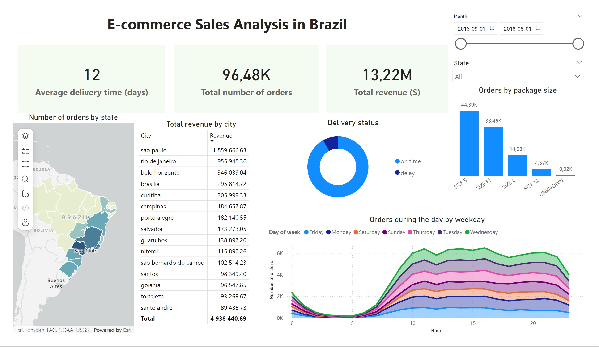
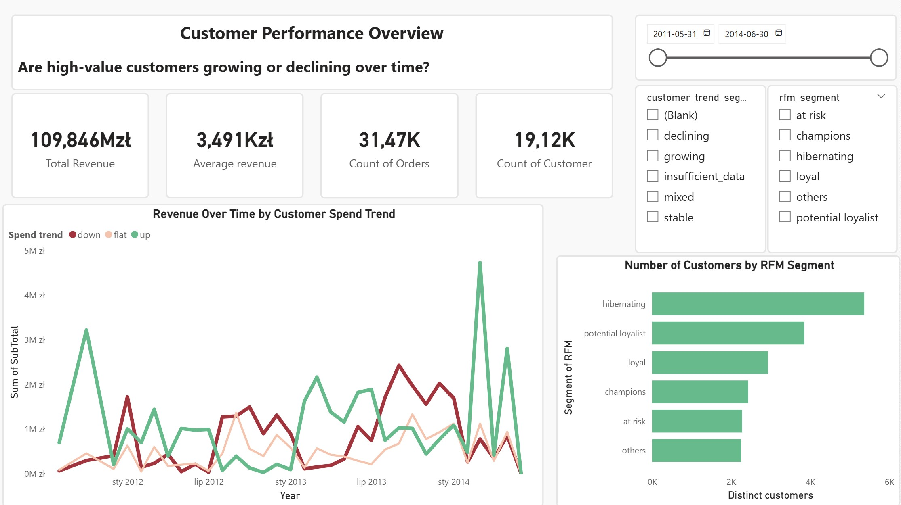
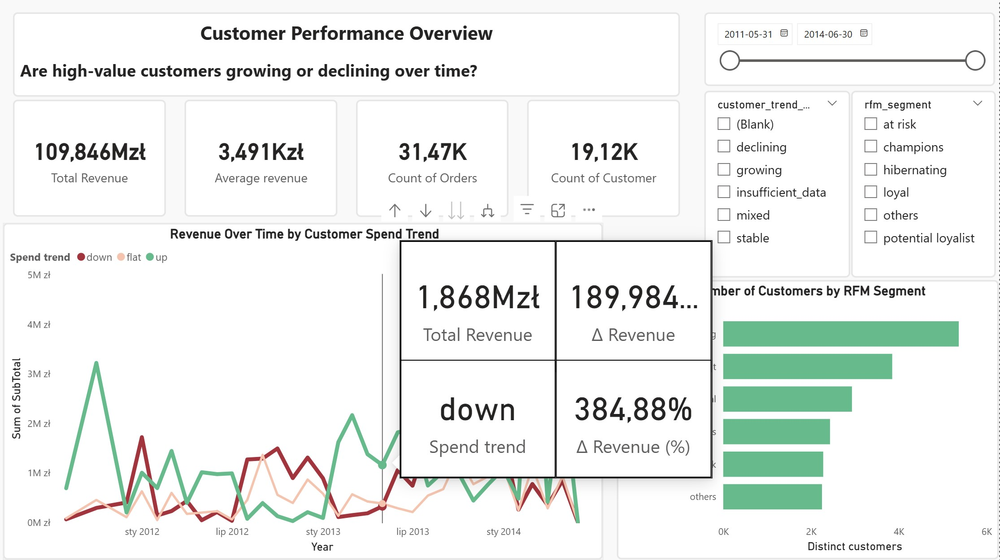
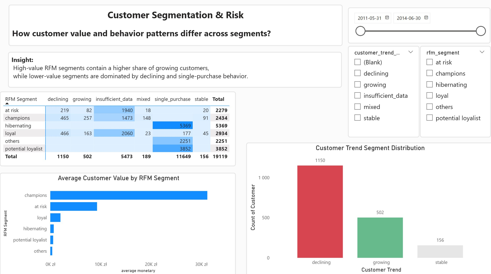

Welcome to my portfolio! I'm a junior data analyst skilled in Excel, SQL, Python and Power BI. I enjoy transforming data into insights through data cleaning, analysis, and interpretation to support data-driven decisions.
My analytical journey began when I chose the topic for my master's thesis. From that moment, I knew that data analysis was something I wanted to pursue seriously.
You can view the latest version of my thesis here: Master’s Thesis (PDF)
Exploratory data analysis – cleaning and visualizing data using pandas and matplotlib.
Data analysis project with additional data transformations.
SQL project analyzing IBM HR Analytics Employee Attrition & Performance from Kaggle.
SQL project analyzing student enrollments and completions using JOINs, window functions, date calculations, and CASE bucketing. Includes interactive Tableau dashboard.
End-to-end data analysis project focused on e-commerce sales and delivery performance in the Brazilian market.
The project covers the full analytical workflow:
Key insights include delivery time analysis, revenue distribution by city and state, order volume trends over time, and delivery status performance.
Tools: SQL Server, Power Query, DAX, Power BI

Customer behavior analysis using RFM segmentation (Recency, Frequency, Monetary) combined with spend trend classification across consecutive purchases.
The project includes:
Tools: SQL Server, Power BI, Power Query, DAX



💼 LinkedIn
✉️ dybka.aleksandra@vp.pl